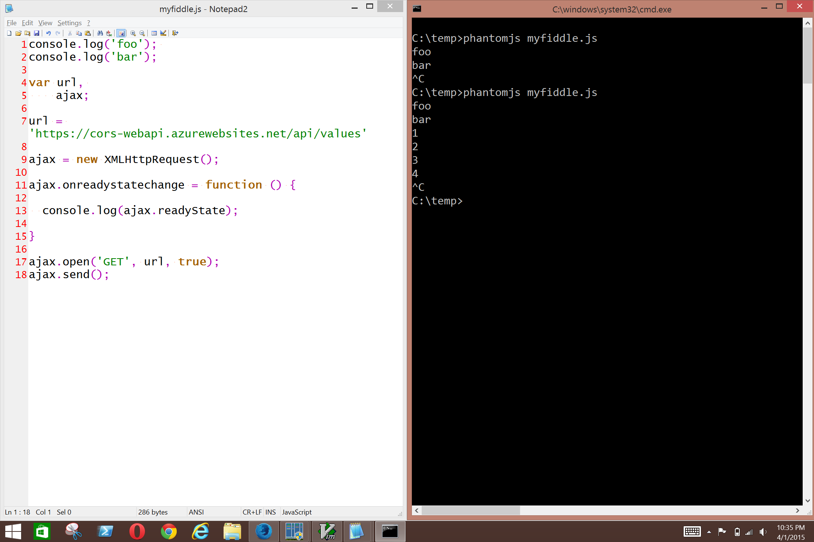

A Makeshift JavaScript REPL Editor with Notepad and PhantomJS
What I wanted was a simple JavaScript console, that's similar to the Firefox Web Console but with the lightness and convenience of the PowerShell ISE.
The result is a kind of cross between a read-evaluate-print-loop and an integrated scripting environment. Here are its advantages.
- It enables exploratory programming and debugging, without having to open the Firefox Web Console.
- It runs
XMLHttpRequestwithout having to set up a proxy, because PhantomJS is a browser. - It works with any text editor from Notepad to Vim.
- We can test cross-origin requests from our local machine, and also inspect them with Fiddler.
There are also some limitations.
- We don't have the DOM. Exploration and debugging is limited to stuff that doesn't involve the DOM.
- We just have JavaScript. It might be tricky to import libraries such as jQuery or AngularJS.
In any case, I find it useful. Here's the solution.
Install PhantomJS
You can install PhantomJS in a variety of ways. This is one of them. It requires Chocolaty.
(1) Open PowerShell.
(2) Run choco install phantomjs.
The PhantomJS executable will be in C:\ProgramData\chocolatey\bin and will also be in the PATH.
with Notepad and the Command Line
I typed up a simpler version of this for a StackOverflow answer here. Here's how I usually do it on my machine.
(3) Run echo. > myfiddle.js to create a JavaScript file (the . means no content.)
(4) Run notepad myfiddle.js to open it with Notepad.
(5) Add the following and save.
console.log('foo');
(6) Switch back to the command line. Run phantomjs myfiddle.js.
(7) The console.log result will appear.
(8) Press Ctrl + C to exit Phantom.
(9) Repeat as necessary.
From the screenshot, you can see that we're able to use XMLHttpRequest without having to setup anything else. That means we can inspect the request with Fiddler!

with Vim and Command Line
(3) Run choco install vim
(4) Run gvim myfiddle.js
This creates myfiddle.js in the current directory and opens it for editing in Vim.
(5) Now in gVim, add the following script.
console.log('foo');
(6) Save the file.
:w
(7) Run it with PhantomJS. You'll see the console output.
:! phantomjs myfiddle.js
Close PhantomJS.
Lather, rinse, repeat.